Respiratory Health Chatbot
Built a web-based chatbot for respiratory health guidance using HTML, CSS, and Vue.js. The goal was to make symptom-based healthcare information more accessible and interactive.
.jpeg)
.jpeg)
.jpeg)
.jpeg)
.jpeg)

Built a web-based chatbot for respiratory health guidance using HTML, CSS, and Vue.js. The goal was to make symptom-based healthcare information more accessible and interactive.
Created a biological and chemical lab calculation tool using HTML, CSS, and JavaScript, then published it on Google Play Store to support lab workflows.
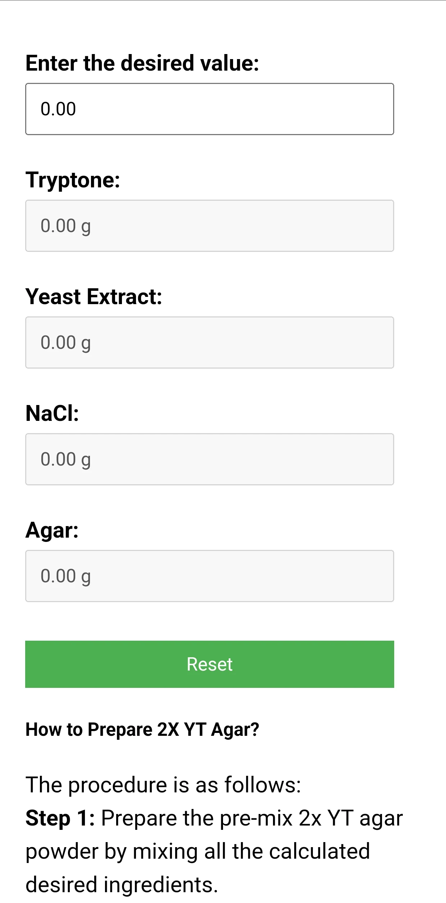
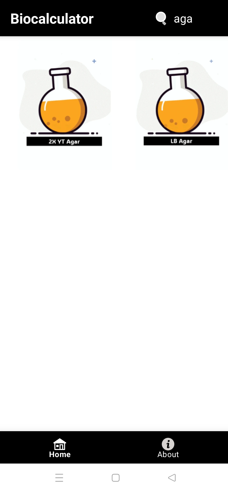
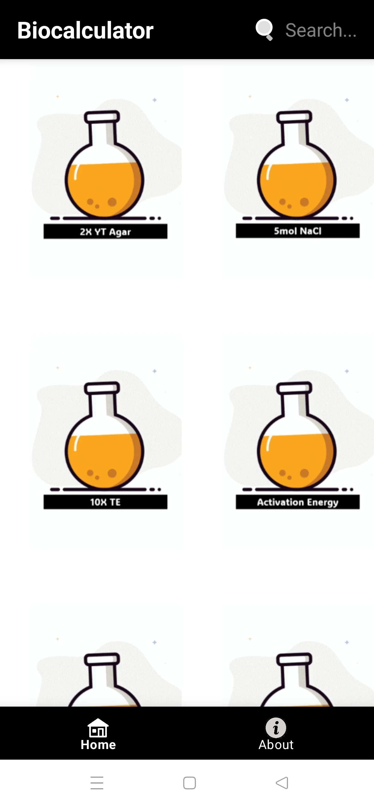
Developed an SVM model with 96.8% accuracy for tuberculosis inhibitor prediction using MATLAB and AutoDock.
Built a Flutter + Google Sheets based inventory system with tracking, updates, filtering, and business-oriented workflows.
TensorFlow-based computer vision system for plant identification with voice feedback integration.
Built Python-based AI gameplay logic to demonstrate algorithmic reasoning and decision-making.
Worked on genomic data structuring and research-focused bioinformatics database organization.
Worked on EHR-based reporting and clinical workflow optimization, supported data accessibility, and collaborated with informatics teams on healthcare data use cases.
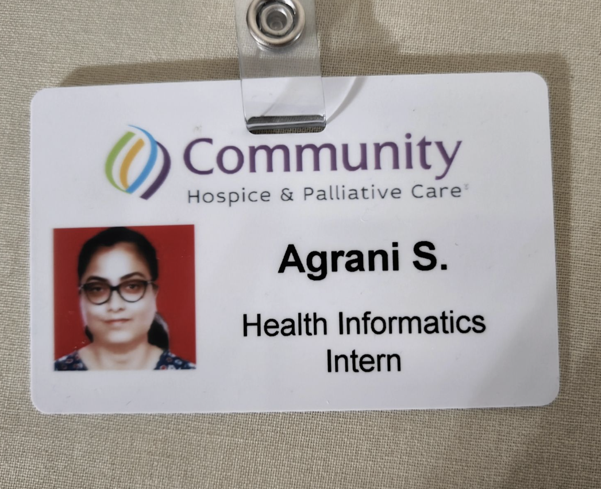
Built ML pipelines for processing and structuring complex financial data, developed automation-oriented solutions using AI and analytics, and transformed unstructured information into usable outputs.
Conducted research and data analysis for IT and analytics consulting projects and prepared structured technical documentation.
Curated genomic datasets for COVID-19 research support and contributed to biological data organization and meta-database work.
Performed microbial testing using culture techniques and diagnostics and supported laboratory workflows for diagnostic testing.
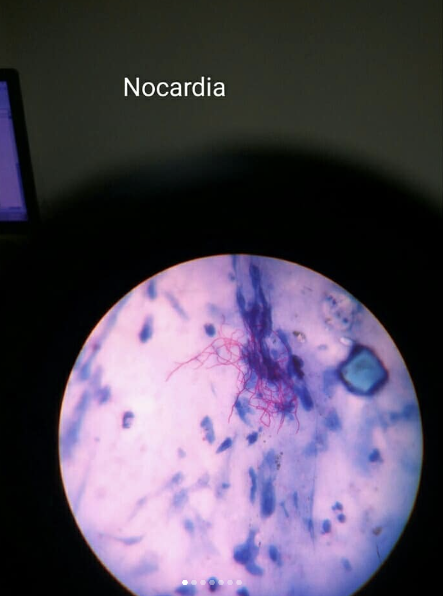
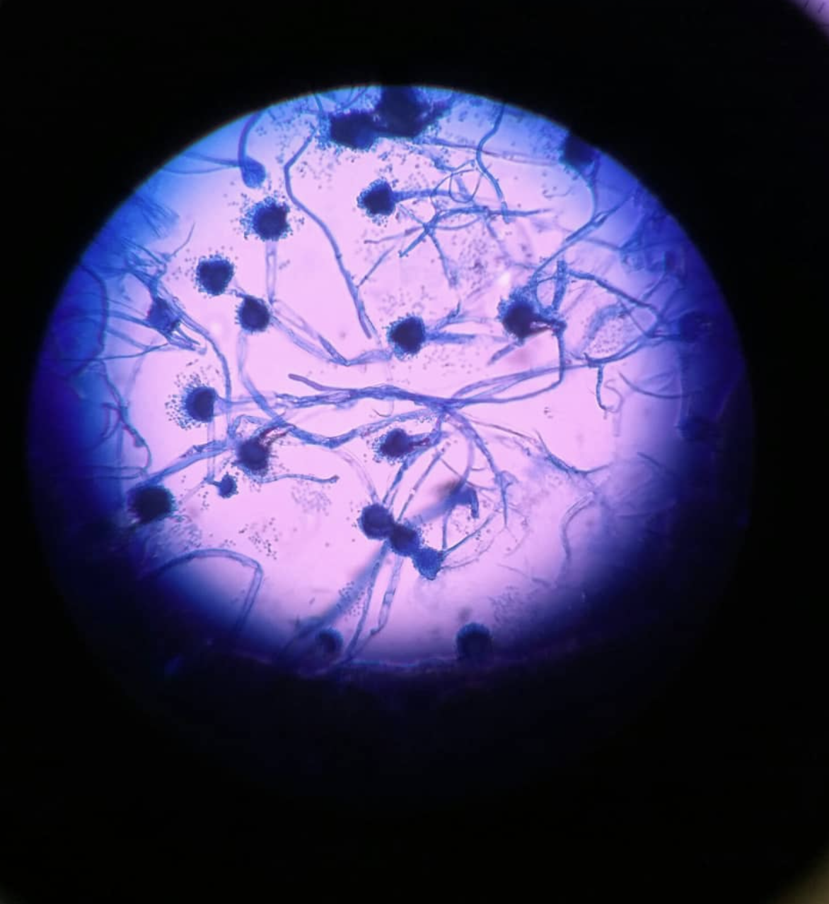
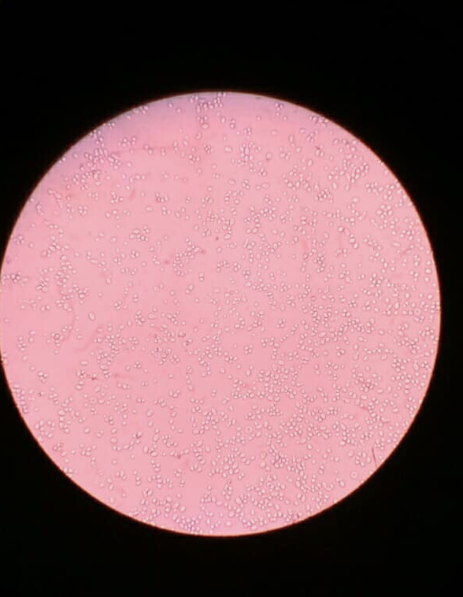
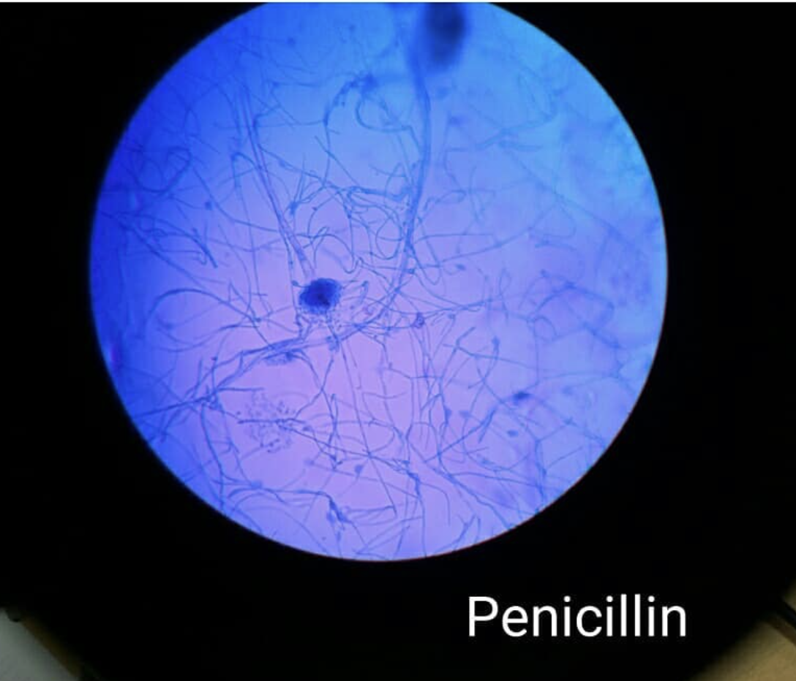

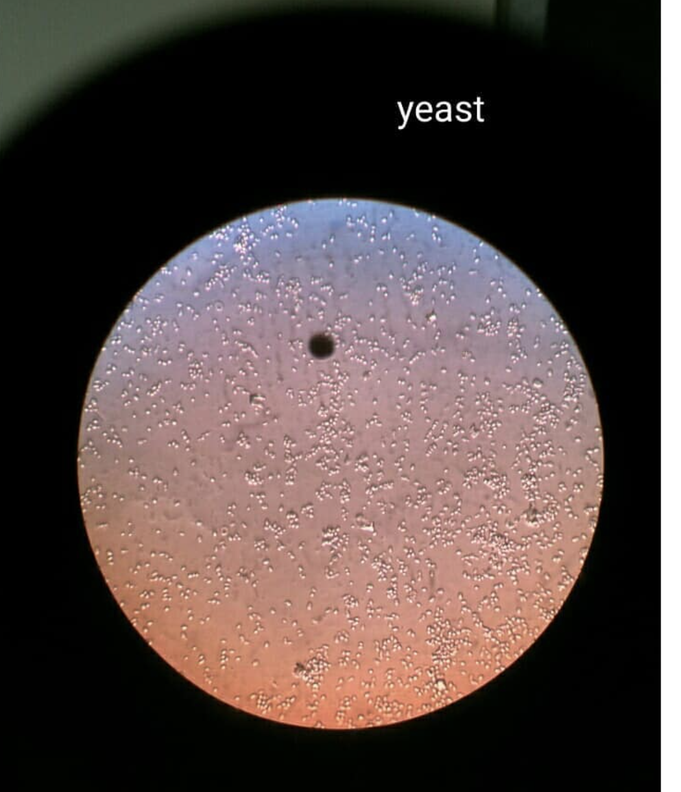
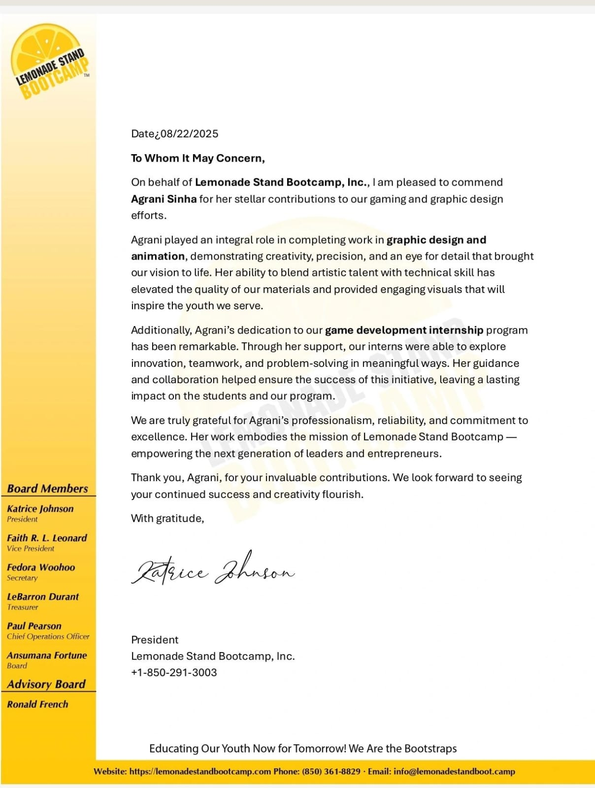
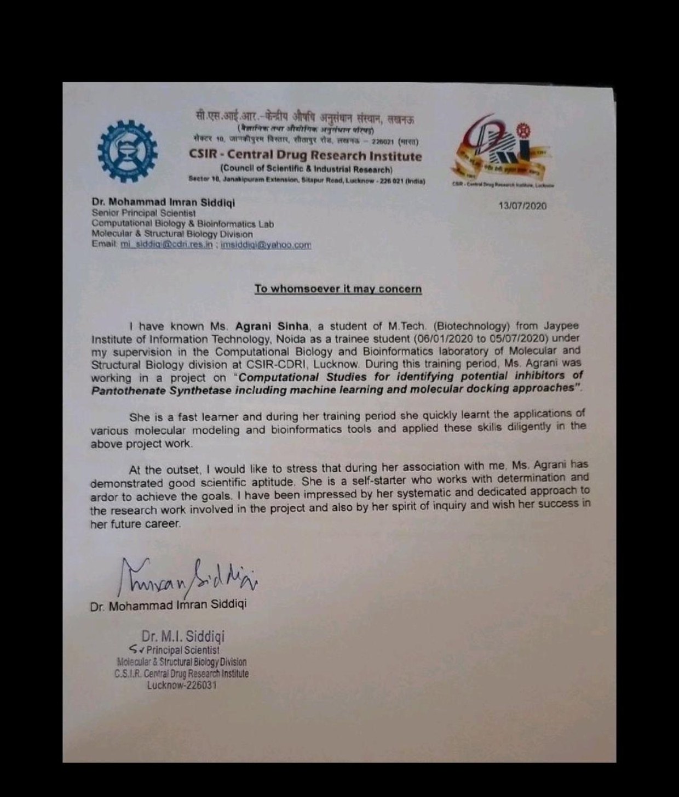
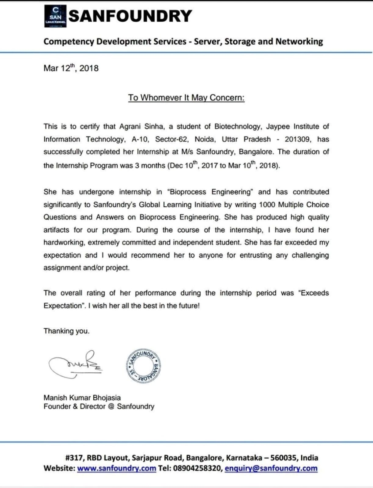
Email: agbrian521@gmail.com
LinkedIn: agranisinha